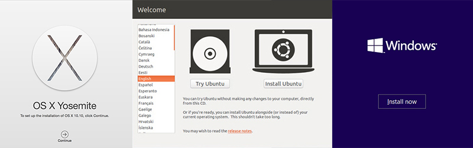

We have done over 70 custom and standard installs of various Operating Systems. Various installations of
Windows (including but not limited to: 95, 98, 2000, XP, Vista, 7, 8, 10), Mac OS X (inclduing but not limited
to: 10.0-10.10), and Linux/Unis OS (including but not limited to: Red Hat, OpenBSD, Ubuntu, CentOS)
that support various hardware and custom configurations. You can trust us to help bring your custom OS install
to life, wether it is a small or big job - we can help you!